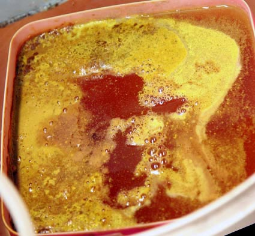
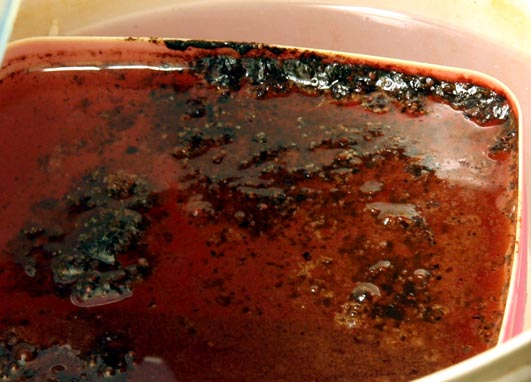
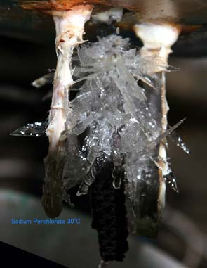
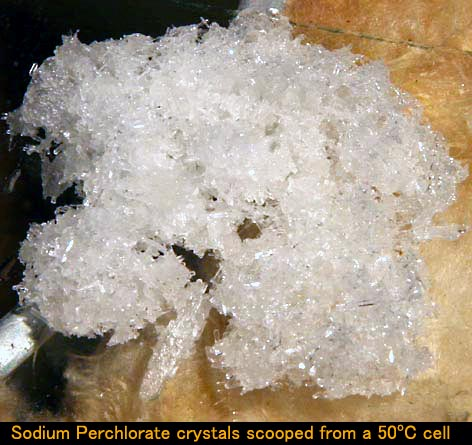
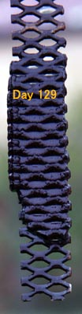
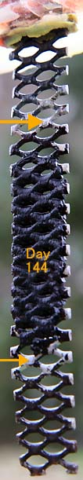
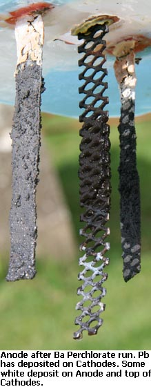

Run One
The Anode was put into a Sodium Chlorate 3.8 liter cell that had (approx.) 600 grams per liter Sodium Perchlorate + 5.3g/l Chlorate + and run at 10 Amps. The Chloride level would have been low but not measured. This cell liquor had been sitting around for years.The cell was put into a bucket of water so that the temperature remained around 50°C. Current density on Anode was low at 150mA per square cm.
The Cathodes consisted of two strips of 3mm thick Titanium with a total exposed surface area of 33 cm squared. Only the 'front' sides of the Ti were exposed to the electrolyte as the 'back' sides of the strips were covered with plastic as they had been in use before in Chlorate cells.
This was a Chlorate scavenging role. The Voltage across the cell was 5.2 Volts @50°C. Over the next 36 hours the Chlorate concentration went down to 0.4 grams per litre. The cell was then stopped. This was 2.4%CE. 50% Sulphuric acid solution was added to the cell at the start both as a pH reducer and as an additive to improve CE. Chlorate content was ascertained by titration. The pH was measured with a meter with a sample being taken out of the cell. It was found to be very important to take a sample from below the surface of the cell as the surface layer always had a very high pH. pH paper could also be used to take measurements as there was no bleaching action from the cell liquor.
The pH of the cell before starting was 11.5. Six cc of 50% Sulphuric acid was added and the cell started. Twelve hours later pH was at 11.7 again and 11cc 50% H2SO4 was added to lower pH to 5.8
Five hours later pH was at 10.4. 6cc acid added and pH went to 3.0. Seven hours later pH was at 3.1 and remained at that pH until end of run which was 12 hours later.
The Anode appears to be none the worse for wear but it's very early days yet.
Run Two
The Anode was put into the same 3.8 liter cell at 10 Amps. The cell liquor consisted of Sodium Perchlorate (approx.) 500 grams per liter + Sodium Chlorate at 156 grams per liter (593 grams total in the 3.8 liter cell). The Chloride level would have been low but not measured. The cell liquor had been sitting around for years. Temperature was around 50°C.Over the next 6.5 days the Sodium Chlorate concentration fell to 70 grams per liter (266 grams total). That's a %CE of 10.5%.
The %CE during days 8, 9 and 10 was 14% as it reduced the Chlorate concentration from 70g/l to 16g/l.
The next 48.5 hours reduced the Chlorate concentration to 4.14 grams per liter, a %CE of 2.3%. The cell was let run for four more days and then stopped.
The Chloride (Cl-) concentration was checked at the end of run and was below 0.5 grams per liter.
The Voltage across the cell at the end of run was 5.12 Volts.
The pH of the cell was kept controlled (to an extent!) by both Sulphuric acid and HCl acid. The cell pH at the start was 9. A total of 48cc of 50% Sulphuric acid was added to bring the pH down to 7.9. A further 48cc of 12% HCl was added to bring the pH down to 7.25. Seems a lot of acid. There was a large amount of 'fizzing' as acid was added with a smell of Chlorine. The pH hovered around 8.8 for the first 7 or 8 days until it moved up to 10.6 during day 8/9. A further 30cc of 6% HCl was added to put pH to 3.4. It was hoped that the less concentrated acid would cause less 'fizzing' though at this stage adding acid did not seem to cause 'fizzing' even if more concentrate acid was used. Twenty four hours later the pH was at 2.6 and it stayed in that region until the end of the run without any acid additions.
Water was added to the cell to keep the level constant throughout the run.
The Anode had been running for three weeks. Three pieces of Lead Dioxide had fallen off the Anode at the bottom. These 'Lead Dioxide Molars' are inclined to fall off this type of Anode as seen with Swede's Anode that he made in a similar manner. The three pieces were three grams in weigh. The Anode was weighed and found to have lost no Lead Dioxide except for the pieces that had fallen off (ie. no erosion). The Anode still weighed 184 + 3 = 187 grams.
Run Three
The Anode was stored for about 12 days and put to work again. The Anode weight was now 184 grams.The 3.8 liter cell was recharged with new (Sodium) liquid. The electrolyte consisted of 374g/l of Chlorate and 103g/l of Chloride and a few g/l Perchlorate (Perchlorate not actually measured). Current into the cell was increased to 20 Amps but due to heating of the mesh substrate carrying the current down to the Lead Dioxide it was decided to decrease the current to 18 Amps. This give a current density on the Anode of 275mA per square cm. The mesh substrate outside the cell was quite warm to the touch due to current heating effect. The cell was kept cool by placing it in a container of water that held approx. 6 liters of water around the cell (more water than the above runs). The cell ran in the region of 52°C throughout the run.
The cell electrolyte was old liquid from runs of Manganese Dioxide Anodes and it had a yellow colour for reasons unknown.
The cell was let run for a day before any measurements were taken.
After another 136 hours of operation (2448Ah) the Chloride concentration had fallen to 12.5 grams per liter and the Chlorate concentration was measured at 524 grams per liter. The Perchlorate concentration at this stage from calculation would have been in the region of 17 grams per liter.
Eight grams of Potassium Persulphate (35.5cc of a 225g/l solution) was added to the cell at this stage to help with CE (see JES 1958). The addition caused a lot of Chlorine to come out of the cell.
After another 77 hours the Chlorate concentration was measured at 322 grams per liter and the Chloride concentration was 0.6 grams per liter. This was an approx. CE (Chlorate converted to Perchlorate) of 28%.
After another 67 hours of operation the Chlorate concentration was 157g/l, a %CE of 26.1%.
After another 96.5 hours of operation the Chlorate concentration was 40.5g/l, a %CE of 12.8%.
After another 118 hours of operation the Chlorate concentration was 5.8g/l, a %CE of 3.1%.
After another 94 hours of operation the Chlorate concentration was 1.1g/l, a %CE of 0.53%.
The cell was let run for three more days and stopped.
pH was kept manipulated by adding 12% HCl acid manually as I had no controllable pump. The pH was all over the place not helped by the erratic additions of acid. An addition of 3cc of 12% HCl was sufficient to keep the cell in the region of 8.0 for the first 160 hours approx. Three days later (three days after adding the Persulphate) the pH was measured (missed two day for pH measurements) and it was up at 11. Added 18cc of HCl to bring the pH back to 7.0. Twenty six hours later the pH was up at 10.8 and 18cc of 12% HCl was added to lower pH to 6.5. Twenty four hours later the pH was back up at 10.5 and 15cc of acid was added which lowered pH to 2.6. Another twelve hours later pH was at 9.8, so added 12cc acid to take pH to 2.4. After 14 hours pH was at 5.0, so no acid added. After another 15 hours pH was at 5.5, no acid added (the Chlorate concentration at this stage was 157 grams per liter). Four days later pH had climbed to 9.6 so 9cc acid was added to take the pH to 2.1 (Chlorate concentration was 40g/l). After another 5 days of operation the pH was at 2.6 (Chlorate concentration at 5.8g/l). After another 4 days of operation the pH was 5.0 (Chlorate concentration at 1.1g/l) and remained at 5.0 until the cell was stopped three days later.
The Anode was dried with a paper towel, let sit for some hours to dry and weighed in at 183.2 grams. A weight loss of 0.8 grams for the 28 days of operation (this cell).
There was a very small deposit of grey looking material on the Cathodes.
The was some brown deposit on the bottom of the cell which was dried, weighed and found to be 0.7 grams. The electrolyte still had the yellowish colour.
Run Four
Another Chlorate/Perchlorate cell was started. This cell had no additive added (Sulphuric acid or Sodium Persulphate). The electrolyte consisted of some old Manganese Dioxide Anode (Na Chlorate) run solution which had a yellow colour which was similar to cell contents above. Current was 18 Amps as per the cell above and it ran at a temperature of approx. 50°C.The cell was let run for approx. one day before any measurements were made.
The Chlorate concentration was measured at 387g/l and the Chloride concentration was 117g/l with traces of Perchlorate.
After 6 days of operation (2592 Ah) the Chlorate concentration was at 386g/l and the Chloride was at 5g/l.
After another 70 hours of operation the Chlorate concentration was at 156g/l, a %CE of 35%.
After another 82 hours of operation the Chlorate concentration was at 32.5g/l, a %CE of 16%.
After another 119 hours of operation the Chlorate concentration was at 4.0g/l, a %CE of 2.5%.
After another 145 hours of operation the Chlorate concentration was at 0.44g/l.
After another 90 hours of operation (cell stopped) the Chlorate concentration was measured at 0.22g/l.
The %CE of this cell is similar to the %CE of the cell run above (Run Three) which contained Persulphate as an
additive. There seems little point in adding Persulphate AFAICS.
Acid was added to the cell to keep the pH around neutral. A 8cc of 12% HCl acid per day was sufficient to keep the cell around 7.5 for the first 5 days. As the Chloride approached zero the acid demand of the cell went up.
The cell was measured on day six and pH was 10.5, 18cc of acid was added to take cell to neutral. 12 hours later pH was back at 10.5 and and 20cc (too much) acid was added which took pH to 3.1. Four and a half hours later pH was back up at 10.5 so 12cc acid was added (pH not measured). Five hours later pH was at 10.4 and 12cc acid added to take pH to 4.3. Nine hours later pH was at 8.1 so 3cc acid added. Eight hours later pH was at 7.6 so 2cc acid added. Nineteen hours later pH was at 2.8 (Chlorate estimated in the region of 270g/l) and was at 5.6 when the cell was stopped.
The Anode was weighed and was now 183.2grams (no weight loss).
Run Five (Stainless Steel Cathodes)
The Titanium Cathodes in the cell were replaced with Stainless Steel of similar surface area in order to see if there was any gains to be had. It is possible for Perchlorate to get reduced (converted back to Chlorate or Chloride) at the Cathode but it was thought that this only happened to a very small extent. 18 Amps were run into the cell and the pH was at around two for the entire run.Chlorate was added to the cell to bring the concentration approx. 30 grams per liter. The cell was ran for approx. one day and the Chlorate concentration was measured at 26.6 grams per liter. 94 hours later the Chlorate concentration was at 2.36 grams per liter, a %CE of 2.7%. This is a similar %CE to that obtained with Titanium Cathodes. pH was 2.3. Four days later the Chlorate concentration was at 0.25g/l.
Run Six (Effort to control pH using Hydrochloric acid)
|

Approx. 500cc saturate Chlorate solution was added to the cell. |
|

|
The cell run was ended a few days after the "145g/l Chlorate + 7.5g/l Chloride" stage and the contents boiled down and added to a new Perchlorate cell run.
Run Seven (High ionic strength electrolyte, addition of Perchloric acid + additions of Sodium Chloride) All commercial Sodium Perchlorate cells are operated with a very high Perchlorate concentration and a high Chlorate concentration. There are current efficiency gains to be had when the cell is run at high ionic strength. It is also necessary to run commercial cells at a high concentration of Sodium Perchlorate so that solid Perchlorate can be obtained in the crystallizer.A cell similar to the cells above was set up. Cell liquor was boiled down until Sodium Perchlorate began to crystallize. The very concentrated Sodium Perchlorate liquor + concentrated (50°C) Sodium Chlorate was added together to make up 3.8 liters of liquor for a new cell run. It is an irksome task boiling and generally slobbering around with hot Sodium Perchlorate and Chlorate solutions and is something the average Amateur would find a waste of time. There are current efficiency gains to be had by running cells at high concentrations of both Chlorate and Perchlorate but they are small (important for industry) and since this Anode is giving low CE there is little point is actually carrying out this exercise. The cell was run at 18 Amps and contained 232g/l Sodium Chlorate(titration), 0.3g/l Sodium Chloride (titration) and lots of Sodium Perchlorate at the start of the run (close to saturation). The cell contents were all dissolved at 50°C. A power cut in the middle of proceedings caused a temperature drop down to 30°C and Sodium Perchlorate precipitated out of the solution onto the Anode and the cell bottom as the pretty picture shows. The white stuff on the Cathodes is glass + polyester resin put there to cover the 'back sides' of the Cathodes. The cell pH was 11.3 at the start. The current efficiency over the first 4 days (making allowance for the power out) was a measly 23.5%. The Chlorate concentration had dropped from 232g/l to 45g/l for 1521Ah. This is a similar %CE to cells above.
Perchloric acid was obtained of approx. concentration 46% and used to manipulate the pH. No attempt had been made to manipulate pH in this cell prior to this. The pH of the cell before adding the acid was 11.5. 30ml of acid was added all at once. There was no visible reaction causing bubbling as there is when HCl acid is added but later additions of Perchloric acid did cause copious fizzing (below). There was no smell of Chlorine or ClO2. After a few minutes the cell liquor did turn slightly yellow with a small odour of Cl/Cl02 but it went back to the normal colour with no odour soon after. The pH was measure five minutes later and found to be 1.5. A few hours later the pH was 1.0. There appears to be no problems with Perchloric acid, as opposed to HCl acid (see the last run), when it is used to reduce pH. After 24 hours pH was still around one.
The Anode is pictured after 116 days of running. Most of the nodules of Lead Dioxide have fallen off the bottom and sides of the Anode. This happened during run seven mostly (this run). There is also some disintegration at the bottom. It is interesting to note that there is little or no wear to be seen at the top of the Anode where there is quite a thin coating of smooth Lead Dioxide (yellow arrow). Perhaps conditions in a Perchlorate cell are more severe at the bottom of the Anode or perhaps Anodes obtain weaker coatings at the bottom when LD plating is taking place (or perhaps both).

Running the cell on-wards there is Sodium Perchlorate starting to deposit on the floor of the cell. The amount of Sodium Perchlorate needed to saturate a 3.8 liter cell at 50°C is in the region of 4800 grams. If the temperature of the cell is allowed to drop a very large amount of Perchlorate comes out of solution and if it allowed to cool to 10°C the whole cell contents turns to heavy slush. This is not a sensible way to make Perchlorate. It is too difficult to extract Perchlorate and them wash (the liquor still contains some Chlorate) as a single washing will put very large amounts of the very soluble Sodium Perchlorate back into solution. |
Run Eight (Using Sodium Fluoride)  A new Sodium Perchlorate cell was started up (day 128 for Anode) similar to the cells above. Cathodes are still stainless steel. The cell was run for approx. 10 days at about 5 Amps before any measurements were made. There was some Chloride present at the start judging from the smell of Chlorine coming from the cell. The Anode continued to wear during the 10 days with some brown scum floating on the top and pieces of Lead Dioxide appearing on the cell bottom.On day 10 the liquor consisted of approx. 600 grams per liter Sodium Perchlorate and 222 grams per liter Sodium Chlorate and zero Chloride. The Anode at this stage had a surface area of 26.6cm squared and was run at 6.62 Amps giving a current density of 250mA per square cm. The cell temperature was around 45°C which is less than the cells above (52°C). The current concentration (a figure often mentioned) is much lower in this cell at 6.6 Amps per 3.8 liters as opposed to about 18 Amps for the cell above. I don't know how this effects CE%. The cell pH was measured at around 11 so 40cc of 46% Perchloric acid was added which lowered the pH to 4. The pH stayed low for the rest of the cell run. At this stage 8.6 grams of Sodium Fluoride was added to the cell to see if it would increase current efficiency (CE). CE is very low with this Anode as it should be approx. twice what I have been getting so far. Fluoride attacks the exposed Titanium substrate as shown with a Ti substrate Anode elsewhere (very first Anode I made) but it is hoped that it will not actually damage the Anode (or whats left of it) proper. The previous Anode that was exposed to Fluorine had lasted quite a long time (140 days approx.). At the time I blamed the Fluorine for that Anodes demise (LD cracking, etc) but I no longer think that that was a correct assumption. BTW, Fluorine raises the over-Voltage for Oxygen gas evolution at the Anode surface so that less Oxygen gas gets produced and more Perchlorate gets made. The Chlorate concentration was measured at this point and was 222g/l. 104.5 hours later the Chlorate level had dropped to 42g/l, a %CE of 50%. This is approx. twice the %CE obtained in (for example) Run seven above (no F) where Chlorate dropped from 232 to 45g/l with a %CE of only 23.5%. A picture of the Anode (day 144) on left shows the Anode continuing to wear and crumble away. The Fluoride can be seen attacking the exposed Ti substrate and this leaves the Ti shiny (white in picture). Two examples of areas attacked are marked with arrows. Perchlorate was starting to crystallize on the cell bottom. 28 hours later the Chlorate level was 24.8g/l, a %CE of 17.7%. 34.25 hours later the Chlorate level was 13.1g/l, a %CE of 10%. 32.16 hours later the Chlorate level was 8g/l, a %CE of 4.5%. pH was around 4.5 at this stage. 44.7 hours later the Chlorate level was at 4.7g/l, a %CE of 2.1%. 61 hours later the Chlorate level was at 1.94/l, a %CE of 0.5%. pH was around 5.3, no smell of Ozone. 84 hours later the Chlorate level was at 1.15g/l, a %CE of 0.3%. pH was around 5.6 and temperature was at 46°C. Anode erosion seems to have slowed up somewhat. The cell was run for about 6 more days and stopped. Long shards of Sodium Perchlorate formed in the liquor when the cell cooled.
Some of the Perchlorate liquor was tested for soluble Lead using a testing kit for toys and ceramics etc. The test give no indication of Lead in the liquor. Lead showed up when the test bud was rubbed on the Anode. The test bud also give a positive indication of Lead when rubbed on a sheet of Lead metal.
When the cell cooled down, lots of Sodium Perchlorate crystallized out in pretty shards. There are some photo's here.
|
|
|
Run Nine (Barium Chlorate/Perchlorate, Ba(ClO3)2/Ba(ClO4)2 )

A small cell was set up that contained 275 grams of a mixture of Barium Chloride, Chlorate and Perchlorate (material left over from a cell run many moons before). The salts were anhydrous (I think!). Cell volume was around 800ml. No additives used.
|
Run Ten (Sodium Perchlorate)
Since there was still some running time left on the Anode, another small cell was set up (same as above) which consisted of about 400 grams per liter Na Chlorate + approx. 15 grams per liter Na Chloride. The sell volume was around 800ml. Current was 4 Amps.
After a few hours of operation all the Lead had fallen off the SS Cathodes and deposited on the cell bottom. pH was probably high as adding small amounts of Perchloric acid caused lots of gas release.
The cell was let run for 19 days. There would have been practically zero Chlorate in the liquor at that stage.
The Anode has now been running for over six months.
Run Eleven (Lithium Perchlorate)
Since there was still some Lead Dioxide remaining on the top part of the Anode another cell was set up. I had 240ml liquor which was labeled as 'Lithium Perchlorate solution', which I used as the cell liquor. There was lots of Perchlorate in the liquor as shown by Methylene blue. There was Chloride present as shown by Silver Nitrate and there was also Chlorate present as yellow gas was produced when some of the solution was added to conc. HCl acid. The cell was run at two Amps. A Teflon egg was used for stirring.
I removed the bottom part of the exposed Ti mesh from the Anode and also the bottom half of each Cathode to allow the Anode/Cathode assembly to fit into the small cell (300ml jar). I cut off the Ti using a very small friction disk cutter (a dremel tool). The vibrations caused more of the remaining Lead Dioxide to fall off.
The Anode worked OK for two days with little erosion or damage. On the third day the Anode was inspected and all the Lead Dioxide had fallen off. The Anode still continued to draw current as there was a thin black coating on a large area of it. It was not known if this was original MMO or perhaps Alpha Lead Dioxide (put there using an initial high current density when plating).
The Li liquor was close to saturation when it was put into the cell. The stirred stopped working for some time (erratic magnetic stirrer) during day three and this caused the solution to heat up to about 60°C which did the Anode no favours. Evaporation from the cell at this high temperature caused Li salts to precipitate out like a hard layer of ice on the cell bottom.
The cell was shut down and the Anode retired.
Summary
The current efficiency of the Anode is low. There never was a smell of Ozone with this Anode in any of the Perchlorate cell runs. Adding Sodium Fluoride to the cell did not damage the Anode and increased %CE by approx. 100% when Chlorate levels are not very low. The F did erode the Ti substrate where it was exposed but that is of no consequence to the working area of the Anode. The addition of Persulphate (or Sulphate) did not help with %CE.If you are more concerned with increasing actual production of Sodium Perchlorate and since %CE is so low at very low Chlorate concentrations, it would probably be better to stop the cell at around 10g/l Chlorate (or perhaps more), boil away some water and remove Perchlorate from the cell by freezing and sucking as much of the electrolyte off the crystals (or add KCl if making K Perchlorate). Then redissolving the Perchlorate crystals and destroying any residual (very small amount of) Chlorate with chemicals. It takes (stupidly) large amounts of time to lower the level of Chlorate to levels low enough (one or two grams per liter) for to allow destroying the remaining Chlorate with chemicals, if you just run and run the cell.
As a cell progresses from a (pH controlled) Chlorate cell into a Perchlorate cell the acid demand drops to zero when the point of approx. 30 grams per liter Chloride is reached. The cell stays around neutral for some time and then starts rising to a high pH. It takes large amounts of HCl to keep cell neutral at this point (there is no point in doing it anyways). When the cell becomes a Perchlorate cell proper, the addition of Chloride will cause the pH to rise to a high level and it cannot be controlled in any sensible fashion. (there is no point in doing it anyways as far as %CE is concerned). The addition of HCl acid only makes things worse by causing the pH to rise as you are adding Chloride when adding HCl acid.
Using Perchloric acid to lower pH does not cause the problems associated with HCl acid. You could also use Sulphuric acid and perhaps have the added advantage of Sulphate improving %CE as described in a paper somewhere (did not work for me above).
There are no %CE gains to be had by controlling pH of Amateur Perchlorate cells. Industrial plants control pH sometimes, where perhaps, there are small CE% gains to be had (?), but it may be more to do with equipment or Platinum Anode corrosion concerns. Perhaps high pH wears Lead Dioxide Anode more rapidly than lower pH as shown when Chloride is added to a Perchlorate cell and the pH rises to a high level and brown froth/scum starts to appear on the cell surface. Perhaps it's not the high pH but rather the presence of the Chloride or perhaps both the Chloride and the high pH. It may be advantageous to keep pH around neutral for Lead Dioxide Anodes as they may last longer?
The thickness of the LD coating did not help to make the Anode last longer as it failed by the LD crumbling away starting at the bottom and then the sides where the nodules fell off. The Lead Dioxide nodules (LD warts, molars) are a big disadvantage and should be avoided. By falling off and exposing the Ti they appear to give the Anode erosion a head-start. The top end of the Anode appears to be tougher and longer lasting than the bottom end or perhaps conditions on the Anode are more severe toward the bottom?
It is probably wise to add surfactant to the plating tank to give (hopefully) smoother, more hard wearing coats of LD with less faults .
Perhaps wrapping the substrate in 'Scotch cloth', as was done when making some of the massive LD Anodes might help to keep the Lead Dioxide together for longer.
The presence of Red Lead in the LD plating tank to eliminate Nitrites may be producing Anodes with low catalytic activity or/and low over-potential for Oxygen gas evolution(low current efficiency)?
Perhaps stirring Perchlorate cells would give less Anode erosion? The 3.8 liter cell used above (most of the time) relied on self stirring by the gasses released from the electrodes which was not very vigorous. The Anode seemed to wear less in the smaller cells used at the end when stirring was used but the top end of the Anode may be more erosion resistant.
The bottom line with this Anode is that it was made 'Getto style'. It passed a total of 64,500 Amper Hours which, at 20% current efficiency, would have made 33kg of Sodium Perchlorate from Sodium Chlorate.
HIT THE BACK BUTTON ON YOUR BROWSER